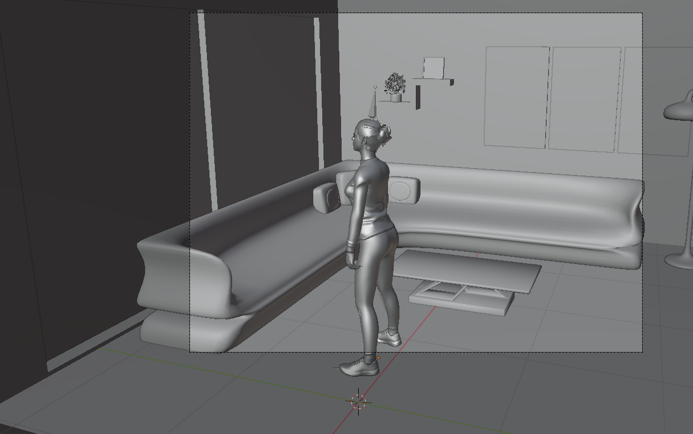
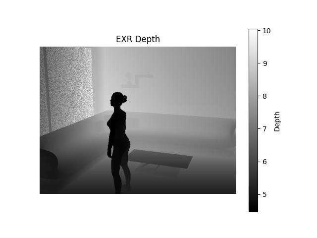
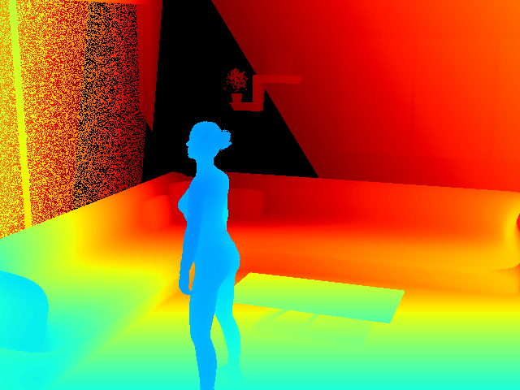
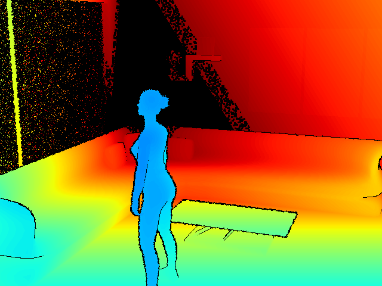
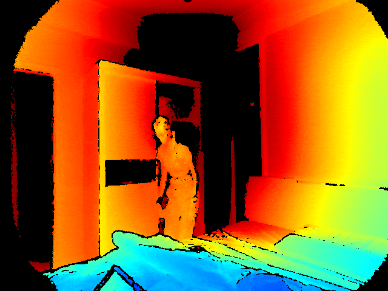
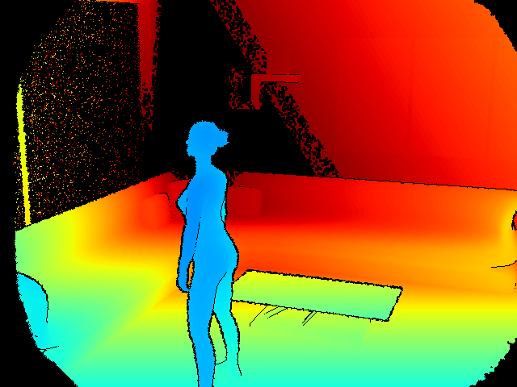

Modelling a depth sensor from a Blender scene
A raw Blender depth pass is almost suspiciously tidy and perfect, which makes it not apt for use in computer vision pipelines. Every visible surface arrives with a precise distance, while a real depth image tends to have a usable range, uncertain silhouettes, and places where no measurement survives. I wanted to see how far a few small, explicit changes could take a rendered frame toward the depth images used for action recognition.
The motivation was the CUHK-X action recognition challenge. In this setting, a multimodal model needs to recognize an action from non-RGB data sources (thermography, night vision, and more) over time. For depth maps, each frame encodes distance rather than the room’s ordinary colors and textures. Synthetic motion can provide controlled examples, but the perfectly clean depth from a renderer looks different from the incomplete frames a depth sensor produces. The experiment here is about that gap in appearance, not a claim that the result reproduces the challenge sensor exactly.
Thus we begin by modelling the environment inside Blender. We used a CC-Attribution Licensed living room model and free to use models from Adobe's Mixamo. The latter turned out to be particularly useful for the purpose, as the vast library of prefab animation already includes several human actions that were part of the original CUHK-X dataset.
A room, a person, and a depth pass
The scene was assembled in Blender around the White Modern Living Room on Sketchfab. The human model came from Adobe Mixamo. A camera looking into the room gives us a fixed view of the action, and Blender’s compositing output provides a depth value for each pixel.


Starting from the EXR
We will study the required passages to map a raw .EXR file generated with a single Blender compositing pass into a realistic depth footage frame. We will focus our analysis on a single frame, and then we will compare the end result for the entire animation with a real footage from the target dataset.
The supplied frame is a 640 × 480 OpenEXR with a single Image.V channel. Reading it as float32 preserves the scene distances.
The values in this particular frame span roughly 4.46 to 10.05; the script chooses 3.0 to 8.5 as its working range. Anything beyond it will eventually become black.
exr = OpenEXR.InputFile("0001.exr")
dw = exr.header()["dataWindow"]
width = dw.max.x - dw.min.x + 1
height = dw.max.y - dw.min.y + 1
raw = exr.channel("Image.V", Imath.PixelType(Imath.PixelType.FLOAT))
depth = np.frombuffer(raw, dtype=np.float32).reshape(height, width)
valid = np.isfinite(depth) & (depth >= 3.0) & (depth <= 8.5)
The colors are only a display choice. We use the same color palette as CUHK-X raw data, which is the JET palette. The interesting part is the underlying distance field: it tells us where a person separates from the room, and where that separation might become less certain in a measured image.
Where real silhouettes get untidy
At a sharp change in depth, neighboring pixels may belong to very different surfaces. Literature sources report that in real-word depth map footage, and indeed in the target dataset itself, this can cause discontinuities and noise at borders corresponding to sharp changes in altitude. We detect these jumps using horizontal and vertical differences, then we find a small band around each edge. A distance transform lets every pixel in that band inherit the strength and direction of its nearest discontinuity.
gx[:, :-1] = depth[:, 1:] - depth[:, :-1]
gy[:-1, :] = depth[1:, :] - depth[:-1, :]
gradient = np.sqrt(gx**2 + gy**2)
edge_mask = (gradient > 0.10) & np.isfinite(depth) & (depth > 0)
distance, (iy, ix) = ndimage.distance_transform_edt(
~edge_mask, return_indices=True
)From there, the model mixes a smooth random field with a finer one. The first can move a border coherently; the second roughens it. The width and strength grow with the depth jump. Sampling a displaced position across the edge would give a narrow, irregular transition instead of a perfectly cut-out figure.
For visualization of the effect, we set the whole selected band to a large number (250). Since 250 lies well beyond the 8.5 limit, those pixels become black. The computed displaced-depth blend on the following lines is never assigned. Here is the actual output from that code:
If the intention is to retain jittered depth instead of a missing-pixel band, that assignment can be replaced with the blend the function already calculates:
corrupted[border_mask] = (
(1 - blend_weight[border_mask]) * depth[border_mask]
+ blend_weight[border_mask] * sampled[border_mask]
)At the far edge of the range
The second disturbance deals with the far limit. Rather than dropping arbitrary pixels everywhere, the script looks near a cutoff of 8.4 and follows regions that remain continuous in depth. Four-connected components stop the candidate area from freely crossing a large object boundary. Within the eligible area, a few sampled points grow into small invalid islands; the final clipping step keeps them on the far side of the cutoff.
On this frame, the fixed random seed removes 5,073 pixels that were initially in range. Some of those overlap the missing band from the earlier operation. That is a modest way of making the range limit less like a perfectly drawn contour.

Making the frame visible
The last stage maps valid distances linearly from 3.0–8.5 into Matplotlib’s jet palette and paints invalid pixels black. The original script then alpha-composites a transparent sensor_disturbance.png over the result. That overlay was not included with the sample, so the images above stop immediately before it.
normalized = np.zeros_like(depth, dtype=np.float32)
normalized[valid] = (depth[valid] - 3.0) / (8.5 - 3.0)
rgb = (colormaps["jet"](normalized)[..., :3] * 255).astype(np.uint8)
rgb[~valid] = 0
base = Image.fromarray(rgb).convert("RGBA")
overlay = Image.open("sensor_disturbance.png").convert("RGBA")
result = Image.alpha_composite(base, overlay)A single frame makes the spatial effects easy to inspect. In a sequence, the random seed changes for each frame, so the disturbance will not necessarily move smoothly over time. The model is useful precisely because each effect can be changed on its own: range, edge width, displacement, and dropout can all be tuned without changing the Blender animation.
All that's left now is to extract the camera lens border disturbance and paste it over synthetically generated frames. We will pack the full Mixamo squat animation into a GIF and compare it with real footage available on the CUHK-X Action Recognition challenge dataset


We can see that the generated shots qualitatively reproduce some visual characteristics of the lens border distortion and the JET color pallette specified by the CUHK-X dataset. The noisy effect in the glass panel in our synthetic simulation is expected, as mirrors and reflective surfaces can cause disturbances in depth sensors and multiple recordings in the original dataset exhibit this behaviour.
References
- Adobe Mixamo - Squatting animation and rigged model
- Sketchfab - CC Attribution Living room model for the scene
- CUHK-X Competition Small Model Track
- Chugunov, Ilya; Baek, Seung-Hwan; Fu, Qiang; Heidrich, Wolfgang; Heide, Felix (2021). “Mask-ToF: Learning Microlens Masks for Flying Pixel Correction in Time-of-Flight Imaging.” CVPR 2021.
- Belhedi, Amira; Bartoli, Adrien; Bourgeois, Steve; Gay-Bellile, Vincent; Hamrouni, Kamel; Sayd, Patrick (2015). “Noise modelling in time-of-flight sensors with application to depth noise removal and uncertainty estimation in three-dimensional measurement.” IET Computer Vision.
- Lee, Sanggwon; Yasutomi, Keita; Morita, Masato; Kawanishi, Hodaka; Kawahito, Shoji (2020). “A Time-of-Flight Range Sensor Using Four-Tap Lock-In Pixels with High near Infrared Sensitivity for LiDAR Applications.” Sensors.
- “Faster than Real-Time Surface Pose Estimation with Application to Autonomous Robotic Grasping” (2022). Robotics.
- “Depth Errors Analysis and Correction for Time-of-Flight (ToF) Cameras” (2017).
- Khoshelham, Kourosh; Elberink, Sander Oude (2012). “Accuracy and Resolution of Kinect Depth Data for Indoor Mapping Applications.” Sensors.
- Zhang et al. (2019). “Causes and Corrections for Bimodal Multi-Path Scanning With Structured Light.” CVPR 2019.
- “Reduction of systematic errors in structured light metrology at discontinuities in surface reflectivity” (2018).
- “Sparse camera volumetric video applications: A comparison of visual fidelity, user experience, and adaptability” (2025).
- Anthonys, Gehan (2022). “Timing Jitter in Time-of-Flight Range Imaging Cameras.”